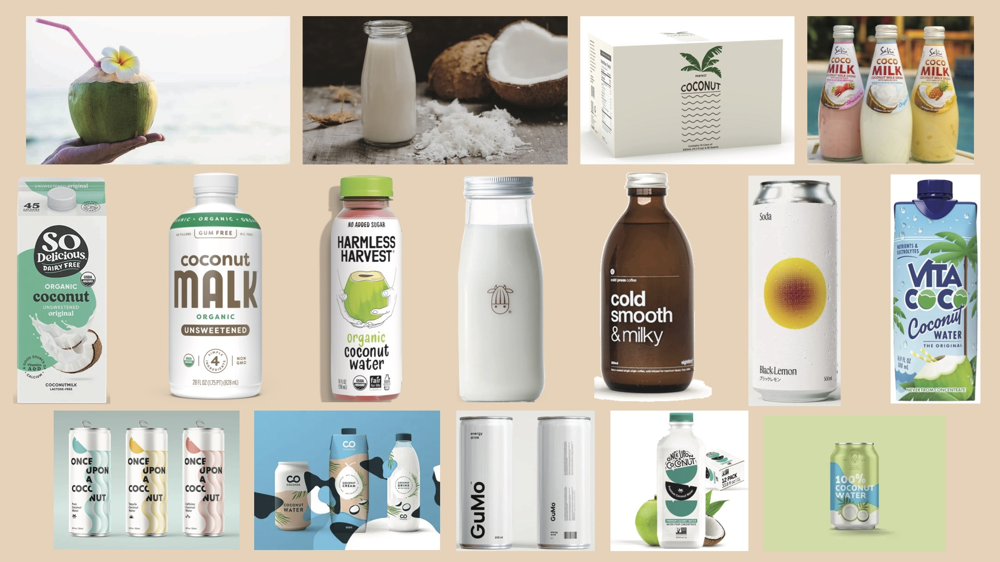
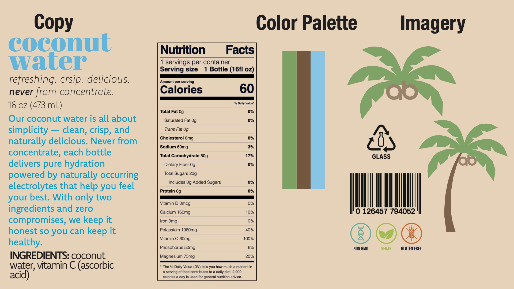
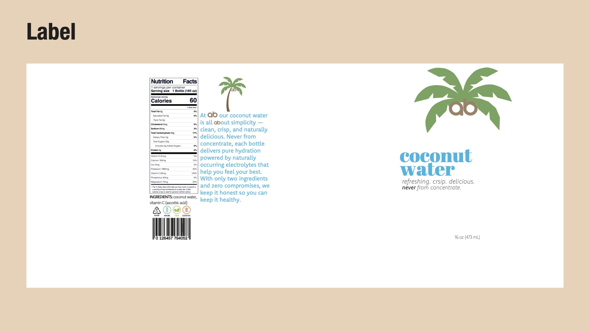
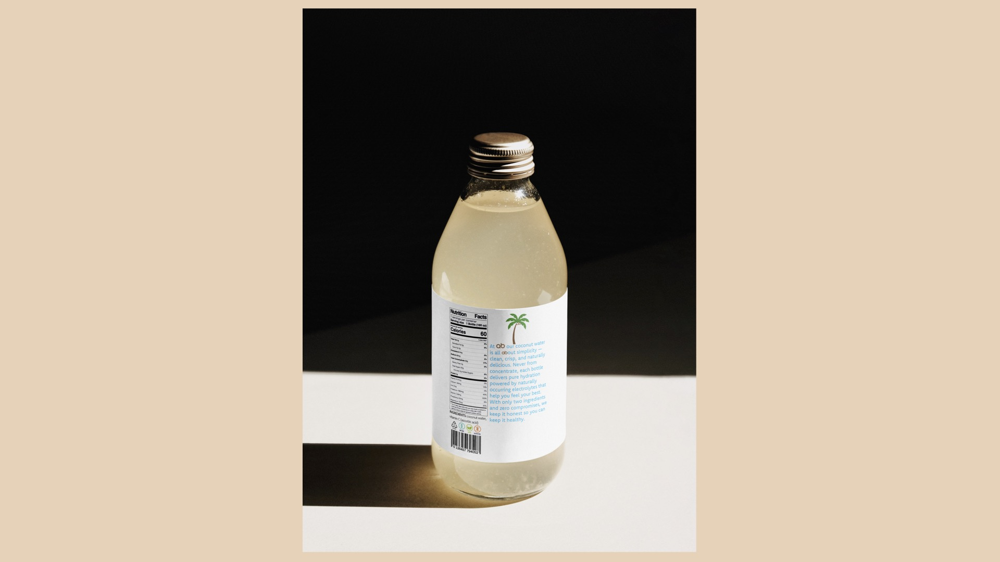

ab's Coconut Water
A full brand identity and packaging system for an original coconut water product — from market research and moodboarding through to final label and physical bottle display.
Market Research & Moodboard
The first step was surveying the competitive landscape — mapping what visual languages existing coconut water brands used and where there was space for something new. The market ranges from maximalist tropical graphics (Vita Coco) to stripped-back minimalism (Harmless Harvest), with most occupying a crowded middle ground of green-and-white health branding.

Brand Direction
The brand ab was built around one idea: simplicity with nothing to hide. Two ingredients, honest copy, clean design. The name uses my initials as a wordmark, which also double as the coconuts in the palm tree logo — a small visual detail that gives the brand personality without shouting.

Label Design
The label wrap was designed for a 16 oz glass bottle, laid out flat to show all three panels: the back with nutrition facts, ingredients, and certifications; the middle with brand story copy; and the front with the logo, product name, and tagline. The white label lets the product speak for itself against the glass.

Final Display
The finished label was printed and applied to a physical 16 oz glass bottle, then photographed against a dramatic dark backdrop. Two angles show the complete product: the front face with the logo and brand name, and the back with the full label in context.

